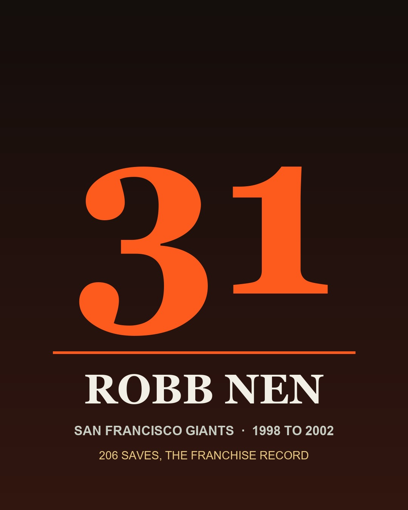

Robb Nen
He owned the Nenth inning, then gave his right shoulder trying to win San Francisco a ring.
The Robb Nen Story
I can still hear the opening riff of "Smoke on the Water" coming out of the speakers, and I can still feel what it did to my stomach. That song meant Robb Nen was jogging in from the bullpen, and for five seasons it meant the game was about to be over. Giants fans started calling the ninth the Nenth inning. They put it on his plaque. I'm not exaggerating any of this, I promise you, I lived it.
He was born on November 28, 1969, in San Pedro, the son of Dick Nen, who played first base in the big leagues. Robb went to Los Alamitos High down in Orange County, where one of his varsity teammates was a kid named J.T. Snow. Nen mostly played third base back then and only pitched some. He's said his dad told him, "it must have been a thousand times, 'let everything you do show your respect for the game.'" You'll see how literally he took that.
Texas grabbed him in the 32nd round of the 1987 draft and he skipped college. The minors weren't kind. Bone spurs and a stretched nerve ate up most of three seasons, and when he finally debuted on April 10, 1993, against Boston, it didn't go great. He posted a 6.35 ERA for the Rangers, and on July 17 of that year they shipped him and Kurt Miller to the Florida Marlins for Cris Carpenter.
Florida moved him to the bullpen in 1994 and that's where he found himself. Fifteen saves in the strike year, then 23, then 35 and 35 again. He saved 108 games for the Marlins and won a ring with them in 1997, and yes, I have to admit it, he got the win against us in Game 2 of that year's Division Series. I've mostly forgiven him. Mostly.
Then the Marlins blew the whole thing up. On November 18, 1997, Brian Sabean sent three minor leaguers, Joe Fontenot, Mike Villano and Mick Pageler, to Florida for Nen. Rod Beck had just walked to the Cubs and left a hole the size of the bullpen. Nen filled it in one year: 40 saves, a 1.52 ERA and 110 strikeouts in 88 and two thirds innings in 1998. It's one of the best trades this franchise ever made.
The stuff was nasty. A fastball up in the high 90s, a hard slider people called The Terminator, and that weird little toe tap in his delivery that nobody could time. He's said he literally stumbled into the tap while trying to fix his mechanics, and it felt right, so he kept it. Coaches wanted him off it for years. Hitters wish they'd gotten their way.
The 2000 season was ridiculous. Forty one saves, a 1.50 ERA, 37 hits allowed in 66 innings, 92 strikeouts and a 0.85 WHIP. He finished fourth in the Cy Young voting and 12th for MVP, which a closer basically never does. In 2001 he led the National League with 45 saves. He was an All Star in 1998, 1999 and 2002, and he saved at least 40 games in four of his five years in San Francisco.
Then came 2002, and the shoulder. A few weeks before the All Star break, after a game in Toronto, he woke up on the plane with the top of his shoulder aching, and it never really got better. He kept taking the ball anyway. He saved 43 games that year. By October the Giants were switching off the ballpark radar gun when he pitched at home so nobody could see how much velocity was gone, and he'd play catch under the stands to get loose where nobody could watch. He still saved seven games that postseason.
Game 6 in Anaheim is where it ended. He came in with the tying and go ahead runs on base, gave up the double to Troy Glaus, then struck out Adam Kennedy to end the inning. That was the last out he ever got in the majors. Three surgeries followed, for a torn labrum, a torn rotator cuff and the capsule around the joint, and two years of rehab that went nowhere. He retired on February 20, 2005, at 35. What bugged him most was that he couldn't pitch out the contract the Giants were still paying him.
The Giants threw him Robb Nen Day on July 9, 2005, and there's a bronze plaque for his 300th save out on the walkway behind the right field wall, near McCovey Cove. When the club opened its Wall of Fame in 2008, he was in the first class. His 206 saves as a Giant are still the franchise record in 2026. Beck sits at 199 and Brian Wilson at 171, and nobody's passed him.
After he retired he came back into the organization in baseball operations, working as an instructor and helping Sabean when he was needed, and by 2020 he was a special assistant to general manager Farhan Zaidi. He isn't listed in the club's front office directory in 2026, and that bugs me more than it probably should. I'd still hand him the ball. Bad shoulder and all.
Why He Was Clutch
Closers get remembered for the one they blew. I get it. I've spent a lot of years being mad about Game 6, and the Glaus double is the last thing on his line. But you don't get to Game 6 without him. The Giants don't get out of Atlanta, they don't get past St. Louis, and they don't take two of the first four in that Series without Nen closing the door, and he was doing it on a shoulder that was coming apart.
Look at the 2002 postseason with that in mind. Ten games, seven saves, a 1.00 ERA, one earned run in nine innings, while the club was hiding the radar gun from the other dugout. He got Chipper Jones to bounce into a double play with the tying runs on in Game 5 in Atlanta. He struck out Albert Pujols and J.D. Drew back to back to save Game 4 of the NLCS. He did it with less than he'd ever had.
And it wasn't new. Five years earlier, in Game 7 of the 1997 World Series, he walked into a one run game with runners on the corners and one out in the ninth, got Sandy Alomar thrown out at the plate, then struck out Omar Vizquel, Manny Ramirez and David Justice in the tenth to keep the Marlins alive. That's the guy we traded for.
Dave Righetti said watching him that fall was his biggest high in the job. Mine too, honestly, as a fan sitting on my couch with my hands over my face. He gave his arm for a ring he never got with us. I don't know how you rank clutch if that's not at the top of it.
Clutch Moments
- October 23, 1997
Holding on in Cleveland for a 3 to 2 Series lead
Before he was ours, he was saving World Series games for Florida. In Game 5 in Cleveland he took an 8 to 4 lead into the bottom of the ninth, and the Indians made it ugly, scratching back to 8 to 7 before Sandy Alomar flied out to Gary Sheffield in right. Save, and the Marlins went home up three games to two.
- October 26, 1997
Game 7: Alomar out at the plate, then three strikeouts in the tenth
Down 2 to 1 in the ninth, one out, runners on the corners. Nen came in, got Marquis Grissom to hit it to short, and Edgar Renteria threw Sandy Alomar out at home. Brian Giles flied out. The Marlins tied it in the bottom half, and in the tenth Nen struck out Omar Vizquel, Manny Ramirez and David Justice around a single. Florida won it in the eleventh.
- August 6, 2002
Save No. 300, the hard way, Giants 11, Cubs 10
Nothing about this one was easy. Sammy Sosa singled, Moises Alou drove him in, Corey Patterson doubled, and the Cubs had the tying and winning runs in scoring position at Pac Bell. Nen walked Delino DeShields on purpose to load the bases, struck out Alex Gonzalez looking and got Joe Girardi to ground into a force at second. That's the save on the bronze plaque out by the Cove.
- September 9, 2002
No. 200 as a Giant, passing Rod Beck
Against the Dodgers, of course. Nen came in during the eighth with a runner on second, gave up an RBI single to Eric Karros that made it 6 to 5, and then got the next four outs, the last on a Paul Lo Duca grounder where Nen ran over to cover first. It was his 200th save in a Giants uniform, one more than Beck, and the franchise record has been his ever since.
- October 7, 2002
NLDS Game 5: Chipper into a double play, Giants advance
Giants up 3 to 1 at Turner Field, ninth inning, and it went sideways fast. Rafael Furcal reached on a Jeff Kent throwing error and Julio Franco singled him to third. Nobody out. Nen struck out Gary Sheffield swinging, then got Chipper Jones to hit into a double play started by J.T. Snow, his old high school teammate, and the series was over.
- October 13, 2002
NLCS Game 4: Pujols and Drew go down swinging
Benito Santiago's two run homer off Rick White in the eighth put the Giants up 4 to 2. Nen made the ninth interesting, a wild pitch on a strikeout, a Fernando Vina single and a Jim Edmonds RBI single that made it 4 to 3 with the tying run on third. Then he struck out Albert Pujols and J.D. Drew, both swinging. Giants up three games to one. Kenny Lofton's walk off single won the pennant the next night, a game Nen didn't pitch in.
- October 23, 2002
Two one run World Series saves
He saved Game 1 in Anaheim on October 19, a 4 to 3 win, with a clean ninth that included a strikeout of David Eckstein. Then he saved Game 4 at Pac Bell, another 4 to 3 game, getting Scott Spiezio on a fly ball and erasing an Adam Kennedy single with a Brad Fullmer double play. That tied the Series at two, and he was doing it with a torn shoulder nobody outside the clubhouse was supposed to know about.
- October 26, 2002
Game 6: the last inning he ever pitched
Giants up 5 to 4 in the eighth, nobody out, runners on second and third, and Dusty Baker went to his closer. Troy Glaus doubled on a 2 and 1 fastball and both runs scored. Nen didn't fold, he struck out Brad Fullmer, walked Spiezio intentionally, got a sacrifice bunt and struck out Adam Kennedy. The Angels won 6 to 5 and took Game 7, 4 to 1, the next night. Nen never pitched in the majors again.
The Highlights
What They Said About Nen
“It's a mental aspect. Some guys have it, some don't. A lot of guys can get three outs. Robb Nen could close.”
“It didn't matter what he was feeling. He took the ball. He was a warrior.”
“You knew he wasn't going to use his arm as an excuse. He was a team-all-the-way guy.”
“We'd see him in the training room all the time, and what he went through, all the work, all the pain, just to throw one inning … I honestly don't know anyone else who would have done it.”
“You just wish he could still be here.”
“He was one of the best players, people and teammates I've ever seen. He really died on the sword for the club and his teammates.”
“He's the best closer the Giants ever had, but his ego is normal, like the guy down the street changing his oil or cleaning out his garage.”
Career Stats
| Year | Team | W | L | ERA | G | GS | SV | IP | H | ER | BB | SO | WHIP |
|---|---|---|---|---|---|---|---|---|---|---|---|---|---|
| 1993 | TEX | 1 | 1 | 6.35 | 9 | 3 | 0 | 22.2 | 28 | 16 | 26 | 12 | 2.38 |
| 1993 | FLA | 1 | 0 | 7.02 | 15 | 1 | 0 | 33.1 | 35 | 26 | 20 | 27 | 1.65 |
| 1993 | TOT | 2 | 1 | 6.75 | 24 | 4 | 0 | 56.0 | 63 | 42 | 46 | 39 | 1.95 |
| 1994 | FLA | 5 | 5 | 2.95 | 44 | 0 | 15 | 58.0 | 46 | 19 | 17 | 60 | 1.09 |
| 1995 | FLA | 0 | 7 | 3.29 | 62 | 0 | 23 | 65.2 | 62 | 24 | 23 | 68 | 1.29 |
| 1996 | FLA | 5 | 1 | 1.95 | 75 | 0 | 35 | 83.0 | 67 | 18 | 21 | 92 | 1.06 |
| 1997 | FLA | 9 | 3 | 3.89 | 73 | 0 | 35 | 74.0 | 72 | 32 | 40 | 81 | 1.51 |
| 1998 | SF | 7 | 7 | 1.52 | 78 | 0 | 40 | 88.2 | 59 | 15 | 25 | 110 | 0.95 |
| 1999 | SF | 3 | 8 | 3.98 | 72 | 0 | 37 | 72.1 | 79 | 32 | 27 | 77 | 1.47 |
| 2000 | SF | 4 | 3 | 1.50 | 68 | 0 | 41 | 66.0 | 37 | 11 | 19 | 92 | 0.85 |
| 2001 | SF | 4 | 5 | 3.01 | 79 | 0 | 45 | 77.2 | 58 | 26 | 22 | 93 | 1.03 |
| 2002 | SF | 6 | 2 | 2.20 | 68 | 0 | 43 | 73.2 | 64 | 18 | 20 | 81 | 1.14 |
| Career | 45 | 42 | 2.98 | 643 | 4 | 314 | 715.0 | 607 | 237 | 260 | 793 | 1.21 |
Regular season. Highlighted rows are his Bay Area seasons. Scroll the table sideways on a phone.